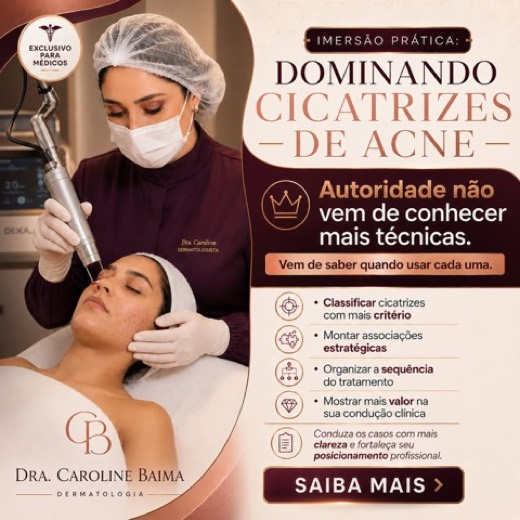
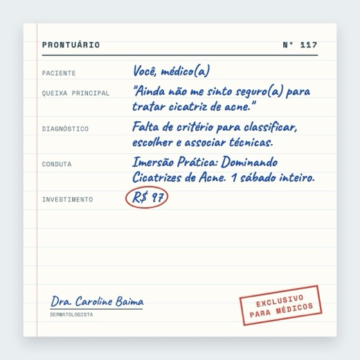
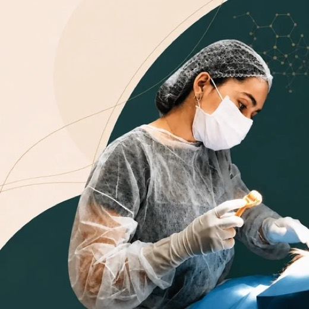
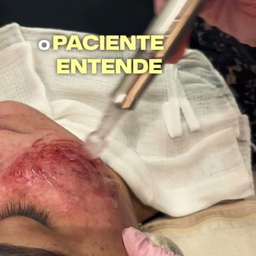
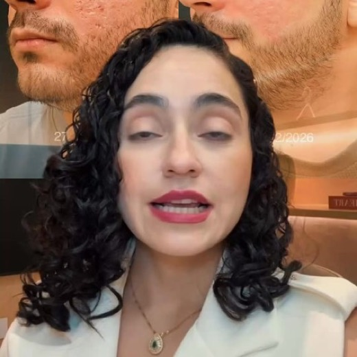

Dra. Caroline Baima · Imersão Prática · turma de 07/11
Próximos criativos da Imersão
O que está trazendo ingresso neste ciclo, por que é hora de renovar as peças e oito criativos novos feitos a partir dos que já provaram que vendem.
10ingressos vendidos de 17/10 até hoje (HeroSpark)
−34%no custo por ingresso em relação ao ciclo anterior
2páginas novas com venda confirmada: v9 e v11-v2
O que está vendendo agora
Nas últimas duas semanas testamos cinco versões da página de vendas e combinamos cada uma com as peças campeãs. O teste trouxe dois aprendizados claros:
As páginas v9 e v11-v2 são as que convertem. Foram as que fecharam venda, e passam a ser o destino principal dos anúncios até a imersão.
Neste ciclo, o ingresso veio das artes estáticas. A arte 083 (autoridade) foi a que mais trouxe ingresso, seguida da 117 (antes e depois com R$ 97) e das versões Prontuário e Cartaz da 117. Os vídeos seguem trazendo visita e são os que mais formam aluno do A3, por isso a mensagem deles entra nas peças novas.

mais vendeu no ciclo083 · Autoridade“Exclusivo para médicos”, a Dra. no procedimento e os 4 ganhos da Imersão.vende117 · InsegurançaAntes e depois real, “se você ainda não se sente seguro” e o preço de R$ 97.

vende117 · ProntuárioFicha clínica escrita à mão em que o médico é o paciente.
O 039 está no ar desde junho e o 083 desde julho. Juntos, trouxeram mais de 40 ingressos. O público de médicos que a Imersão alcança é qualificado e não é infinito: boa parte dele já viu essas peças muitas vezes. Isso é natural numa oferta que roda há cinco meses, e a resposta é manter a mensagem que vende com uma cara nova.
Daqui até 07/11 a ideia é colocar no ar peças novas a cada poucos dias, sempre a partir de uma campeã, e deixar os números escolherem quais ficam.
O que as campeãs têm em comum
Falam com o médico pelo nome
“Médico(a), se você…”, “Exclusivo para médicos”. A pessoa sabe na hora que a peça é para ela.
Imagem clínica real
A Dra. no procedimento ou um antes e depois de verdade. Nada de banco de imagem.
Uma dor ou uma provocação
Insegurança diante do caso (117), autoridade (083), ou o médico que encaminha o paciente (036).
Oferta clara
Nome da Imersão em destaque e o R$ 97 visível. As peças com preço explícito vendem mais neste momento.
Os vídeos que formam mais aluno do A3 (036, 033 e 040) têm outra força: questionam o médico sobre o próprio consultório. Levar essas frases para o formato de arte, que é o que está fechando ingresso agora, é o centro da proposta abaixo.
Oito criativos novos
Cada peça sai em feed (quadrado) e story. As cinco primeiras dá para produzir com o material que já temos. As três últimas precisam de foto ou gravação do time.

vem do vídeo 036
“Por que você ainda encaminha o paciente com cicatriz de acne?”
Visual
Molde da 083: a Dra. no procedimento, selo “exclusivo para médicos”, título grande e R$ 97 no rodapé.
Por quê
O 036 é o criativo que mais forma aluno do A3 (R$ 765 por aluno). Aqui a frase dele ganha o formato que mais vende ingresso.
vem do vídeo 033
“Botox tem em todo consultório. Cicatriz de acne, não.”
Visual
Molde do Cartaz: fundo de cor forte, frase em duas linhas, R$ 97 e “1 sábado. 1 critério.”
Por quê
Posiciona a cicatriz como diferencial do consultório, a mensagem do 033 (15 ingressos e 3 alunos).

vem do vídeo 040
“Seu paciente entende pelo que está pagando?”
Visual
Molde do Prontuário: ficha do paciente com “queixa: não vê valor no tratamento” e “conduta: Imersão Prática”.
Por quê
O 040 tem a maior taxa de ingresso que vira aluno (50%). Atrai o médico que já atende e quer cobrar melhor.
vem da arte 083
Carrossel “Autoridade não vem de conhecer mais técnicas”
Visual
6 cards: capa com a frase da 083, um card para cada ganho (classificar, associar, sequência, valor) e o card final com a data e o R$ 97.
Por quê
Mesma mensagem da peça que mais vendeu no ciclo, num formato que o médico passa com o dedo e lê até o fim.
vem da 083 e da 117
Série com data: “Sábado, 07/11 · últimas vagas”
Visual
As duas campeãs com uma faixa de data e a contagem (“faltam 5 dias”, “faltam 3”, “é amanhã”), trocadas de 02/11 a 06/11.
Por quê
Nos últimos dias, quem já conhece a Imersão precisa de um motivo para decidir agora.
vem da 117 · precisa de foto
Novo antes e depois, outro tipo de cicatriz
Visual
Mesmo layout da 117 com outro paciente (rolling ou boxcar) e o tipo de cicatriz escrito na foto.
Por quê
O antes e depois real é o que mais prende o olho. Um caso novo renova a peça sem mudar a mensagem.

vem do 039 e da 117 · gravação
Vídeo de 20 segundos: “Médico, se você ainda não se sente seguro…”
Visual
A Dra. fala olhando para a câmera nos 3 primeiros segundos, corta para o procedimento e fecha com Imersão, data e R$ 97 na tela.
Por quê
O 039 é o vídeo que mais vendeu ingresso na história da Imersão. Um vídeo novo e curto, com a frase da 117, dá uma cara nova a essa mensagem.
novo · gravação de aluno
Depoimento de médico aluno: “o que mudou no meu consultório”
Visual
Vídeo selfie de 30 a 40 segundos de um aluno do A3 ou da Imersão, com nome, cidade e especialidade na tela.
Por quê
Quase toda prova que aparece hoje nas peças é resultado em paciente. A palavra de outro médico é a prova que falta para quem está em dúvida.
O que precisamos do time
Aprovar as peças desta página (pode responder só com o que entra e o que sai).
Fotos de antes e depois novas, com autorização do paciente, de pelo menos um caso de outro tipo de cicatriz.
Dois ou três depoimentos de alunos médicos, gravados no celular mesmo.
Uma gravação curta da Dra. com a frase “Médico, se você ainda não se sente seguro para tratar cicatriz de acne…”.
Recuperação de checkout. De cada cinco médicos que abrem o checkout, um finaliza. Se o time puder mandar o relatório de carrinhos abandonados da HeroSpark e chamar no WhatsApp quem gerou Pix e não pagou, é ingresso que já está a um passo.
Cronograma até a imersão
30/10Aprovação das peças pelo time.
31/10 e 01/11No ar as 5 peças feitas com o material atual (036, 033, 040, carrossel 083).
02/11 a 06/11Série com data e contagem; entram foto nova, vídeo e depoimentos conforme chegarem.
07/11Imersão. Na semana seguinte, leitura de quais peças trouxeram ingresso e aluno.
Números conferidos na HeroSpark (vendas de ingresso) e no Meta (investimento e visitas), de 17/10 a 29/10/2026.